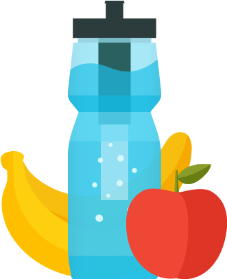
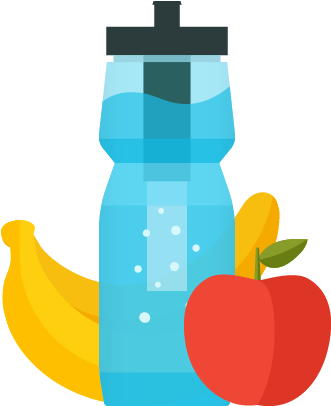

Common Hiking Essentials
Looking to prepare for your next hike? This page has got you covered with all of the
essentials you could ask for.
These are some of the most common gear brought along for hikes,
according to REI, a well known hiking and outdoor accessories
store, which may vary based on hike length.
Click on any of the images below to
learn more about that hiking accessory.
Hiking Backpack

Hiking Boots

Map and Compass

First Aid Kit

Knife or Multi-tool

Sunscreen

Insect Repellent

Headlamp or Flashlight

Extra Food and Water

